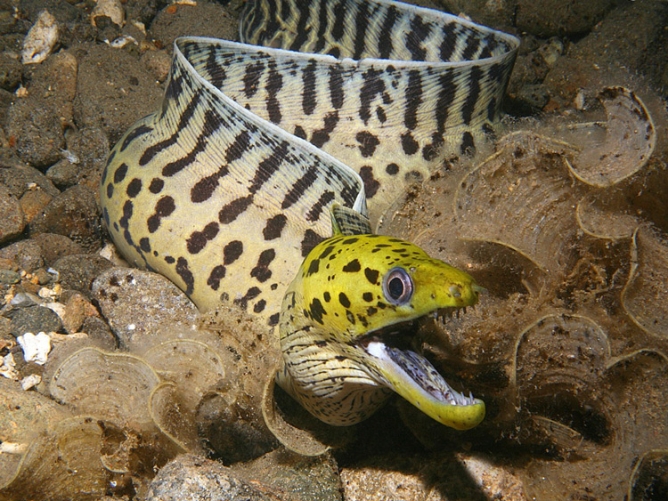

Мурена

Мурены — крупные змеевидные рыбы, известные своей ядовитостью и агрессивным характером. В действительности многие факты о муренах сильно преувеличены. Почти 200 видов мурен объединены в семейство муреновых. Эти рыбы являются ближайшими родственницами других змеевидных рыб — угрей.
Все виды мурен имеют крупные размеры: самые мелкие достигают в длину 60 см и весят 8-10 кг, а крупнейшая в мире гигантская мурена (Thyrsoidea macrura) достигает в длину 3,75 м и весит при этом до 40 кг! Тело мурен непропорционально длинное, немного сплющенное с боков, но не совсем плоское. Задняя часть тела выглядит тоньше, а средняя и передняя часть туловища немного утолщены, от этого мурена напоминает гигантскую пиявку. Грудные плавники у этих рыб отсутствуют вовсе, зато спинной плавник тянется по всей длине тела. Однако увидеть мурену во всей красе удается немногим, в большинстве случаев ее тело скрыто в расщелинах скал, а наружу торчит только голова.
Мурены — морские жители. Водятся они только в соленых теплых водах. Наибольшего видового разнообразия мурены достигли в Красном море и Индийском океане, также они встречаются в Средиземном море, Атлантическом и некоторых частях Тихого океанов. Водятся эти рыбы преимущественно на небольшой глубине: в коралловых рифах и на скалистых мелководьях, максимальная глубина обитания до 40 м, некоторые виды могут во время отлива ползать по суше. В этом мурены очень схожи на своих родственников угрей. Мурены держатся большую часть жизни в укрытиях: расщелинах подводных скал, внутренних полостях крупных губок, между зарослями кораллов. Активны эти рыбы в основном в сумерках, поэтому видят плохо, но они компенсируют этот недостаток отличным обонянием. С запечатанными носовыми отверстиями мурена не способна обнаружить добычу.